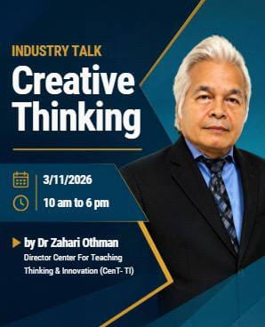
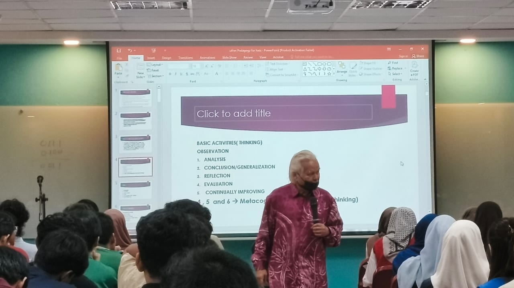
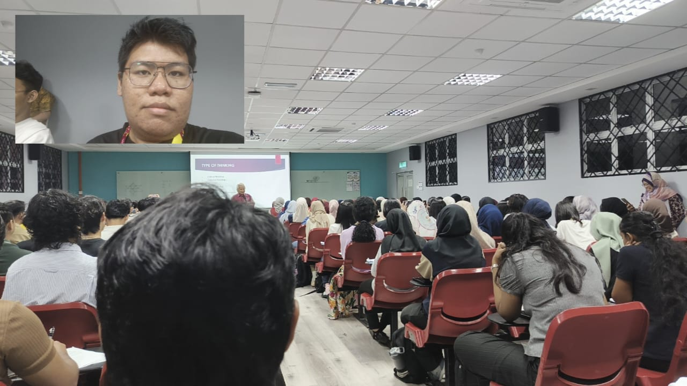

Date
3 November 2026
INDUSTRY TALK · 03 NOVEMBER 2026
Creative thinking, teaching innovation, and the practical development of new ideas.
3 November 2026
10:00 AM – 6:00 PM
BK1, Block N28
Dr Zahari Othman
Director, Center for Teaching Thinking & Innovation (CenT-TI)
Photos taken during the Creative Thinking industry talk.



PERSONAL REFLECTION
Thanks to my course programme, I had the opportunity and obligation to attend Dr Zahari's industry talk on Creative Thinking. Despite a few hiccups along the way, the programme went quite smoothly.
Unlike industry talks that focus mainly on technical fundamentals and knowledge, Dr Zahari's session was a rather unique and refreshing experience. The talk was built around human interaction between the speaker and the audience, making it feel more engaging and participative.
Thinking skills span across several areas, including critical, creative, computational, mathematical, and scientific thinking. These were explained through their basic functions, allowing us to better understand how they can be applied in daily life and in our future careers, particularly in a field such as data engineering.
The first part of the talk began with a pre-test to assess our existing understanding of thinking skills. It then progressed into explanations of their fundamentals, including analysis, reflection, evaluation, and metacognition.
Among these concepts, metacognition was the most interesting to me. At first, it might sound unfamiliar, but we actually practise it subconsciously in our everyday lives. In simple terms, metacognition means thinking about our own thinking. It involves making sense of our thoughts and deliberately organising them before attempting or completing something.
When viewed this way, it is easy to recognise metacognition in daily activities. Considering different perspectives, planning a course of action, comparing options, weighing their advantages and disadvantages, and imagining possible outcomes are all examples of thinking processes that involve metacognition.
Rather than allowing these processes to happen entirely subconsciously, we can practise them deliberately to improve the way we approach problems and make decisions.
Creative thinking works hand in hand with critical thinking. Critical thinking allows us to understand the available options and evaluate the advantages and disadvantages of each one. With that understanding, we can develop solutions that go beyond what already exists.
"Critical thinking is a pursuit of relevant and reliable knowledge about the world."
Cloud technology is constantly evolving to meet the demands and expectations of its users. Applying creative thinking in this field means looking beyond existing solutions and asking what can be improved. This requires understanding the current situation, identifying its limitations, recognising user demands, and keeping up with the technologies available today.
Only with that understanding can we develop better approaches and contribute to the continued growth of cloud computing.
The talk reminded me that technical knowledge alone is not enough. In data engineering and other technology fields, being able to analyse a situation, reflect on our decisions, and approach problems from different perspectives is just as important.
Metacognition was the most memorable concept for me. It made me realise that improving the way I think can also improve the way I learn, plan, and solve problems.